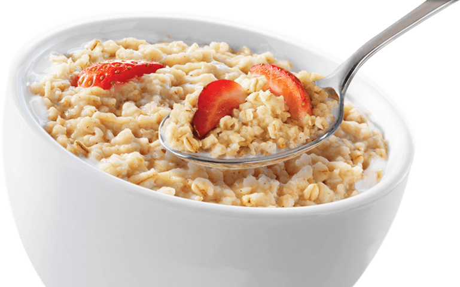

Oatmeal

This is a recipe for Oatmeal. It's a simple recipe and can be made as long as you have oats, and water; but if you're looking for flavor, that can be
adjusted using a few simple ingredients such as cinnamon, and brown sugar. For this recipe, we will be using milk instead of water, and adding a few extra things to make the flavor
really pop!
Ingredients:
- 1/2 Cup of Milk
- 1 Cup of Oats
- 1 Tsp. of Brown Sugar
- 2 tsp. of Cinnamon
Directions
- Pour 1/2 Cup of Milk into a Pot and bring it to a slight boil
- Once boiling, bring the heat down to low and dump your cup of Oats into the Milk
- Allow the Oats to hydrate and stir occasionally
- Once the Oats and Milk have incorporated, turn the heat off and pour the Brown Sugar and Cinnamon into the pot
- Mix WELL to avoid clumps
- Eat and enjoy!